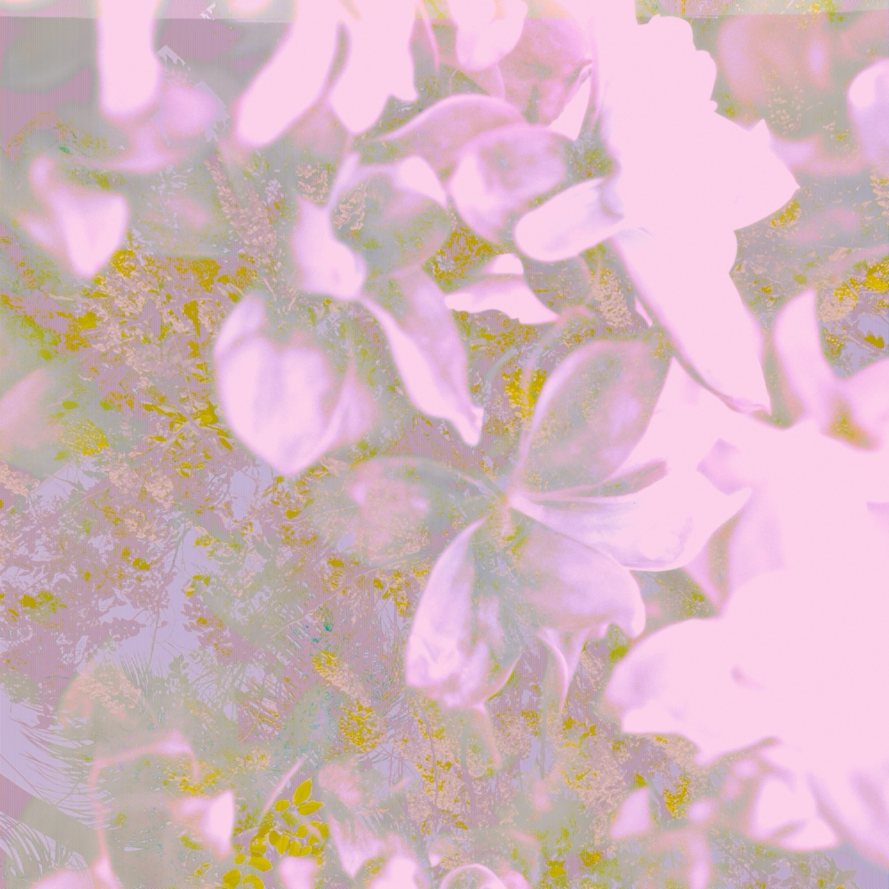

Thinking in Shades of Lipstick
Soft plum Vivian
slip catwalk I'll
have the claret/
burgundy, pozhaluysta... An icy
nymphet radiance
a cool
magnolia baby -
satin
finish.
I am always driving there in my sunglasses,
mon amour.
Had you noticed?
Mystique 001
evening
in Tokyo
Lady
Bamboo Skyscrapers
Bamboo cloud-churches
Gbagada; I feel as dull
as a
skyscraper.
I feel as blunt as a magnate.
Anger Album
Don't let it out
I can remember the names of several cities; one is Syracuse
I let it slide. But, in London, forgot.
Fell down and tasted something
nice. Houston,
ocean, saliva, home.
In each city, I played the cello to an incredible standard.
In each one, I passively observed
towers, unions, history, radio stations, networks,
Americanisms.
And to think that in all this time, I was the helicopter,
you the parent.
To think that in all this time, you were not actually
teaching me how
to be weird.
Frangipani
There should be time enough for one more miniature garden,
for the wet spiral
of one more conch,
for a concert of passions and a meeting
of temple floors. For the lonely
tile, panorama -
desert whispers.
Good Grief
Hello, darling.
You are always listening to
high-tech what. You can taste the cement
now, and your head is... bellowing.
Do you care about symbols? No and yet
you become
a heavy fanatic in every
moment of crisis.
Say goodbye
to your favorite artists, since they all appear
to be saying goodbye
to you. A dreaded
voice urges you not to worry,
since their goodbyes are
well-omened,
and, besides, they’re on
the news.
Car Poem/Swamp Rose
Fresh pink guitar-lady Oh no
She is stuck
under a tempest
!!
Now
only the blooming gutters
can give her back her
turquoise
phosphorescence
her unimpeachable
odor
Upset Stomach
Fuddy-duddy I am desperately in love
Oh! I am
sick
to my stomach.
A salient surprise
on a rusty morning. Hang on -
whose birthday is
it?
Parenting Poem
No rest for the I's in the windows
I observe
that there are no decent words
for ugliness.
I am surprised at that,
but it is not quite
the same feeling.
A twilit sadness is more
what is troubling
my pre-teen.
Erica Poem
You may not agree
with me,
but her first name
is
Erica,
and she knows all about the sibilants
and
the chimes.
Regret Egret
Experience, tedium, cardinal
sins, settling down.
The knockout stages.
Forgiveness in exercise.
Forgiveness is exercise.
I want to win!!!
Anthill Poem
Why don't you leave my anthills alone?
These are not
your
Cuban
buttercups!
Here it Comes
Open wide! Love is coming...
And he is bringing
the sextiles.
Angel-eyes
Whenever I look at you,
darling,
rain in all directions.
My apologetic cells...
Blissful Poem...
Bliss in the tropics.
I haven't forgotten. I
have just moved on -
a jewel tucked into
a frangipani blossom.
Paradise garbage tincture fabric,
indigo fingers,
swathes, prostrations, patterned
silk.
Frowning
A freshness...
remainders...?

Home Page
Instructions for adding this set of poems to your home screen:
- Navigate to this website on Safari: https://tsemone.com/poem-car/poems.html
- Click the three dots at the base of the screen
- From the context menu, select 'share'
- Scroll down until you see the 'Add to Home Screen' option + tap
- Tap 'add'